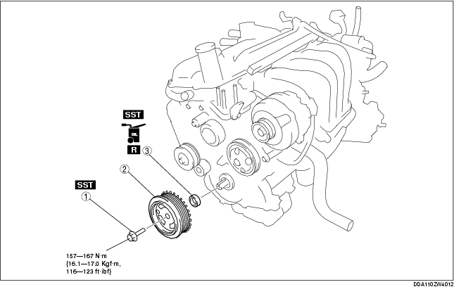
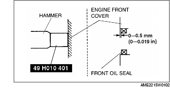

Front oil seal replacement [ZY]
1. Disconnect the negative battery cable.
2. Remove the drive belt. (See DRIVE BELT REPLACEMENT [ZY].)
3. Remove in the order indicated in the table.
4. Install in the reverse order of removal.

|
1
|
Crankshaft pulley lock bolt
|
|
2
|
Crankshaft pulley
|
|
3
|
Front oil seal
(See Front Oil Seal Removal Note.)
|
Crankshaft Pulley Lock Bolt Removal Note
1. Fix the crankshaft pulley using the SSTs.
2. Remove the crankshaft pulley installation bolt.

Front Oil Seal Removal Note
1. Remove the oil seal lip using a cutting knife.
2. Remove the oil seal using a flathead screwdriver with the tip protected by a rag to prevent crankshaft oil seal damage.

Front Oil Seal Installation Note
1. Apply clean engine oil to the new front oil seal.
2. Insert the front oil seal into the engine front cover by hand.
3. Tap the front oil seal in using the SST and a hammer.


Pushing distance of the front oil seal (from the edge of the engine front cover)
Crankshaft Pulley Installation Bolt Installation Note
1. Fix the crankshaft pulley using the SSTs.
2. Tighten the crankshaft pulley installation bolt.

Tightening torque